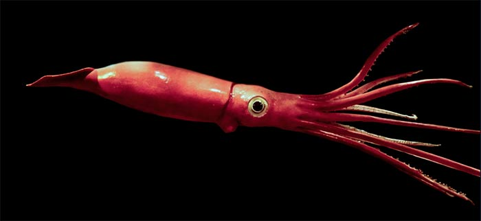

Architeuthis dux (calamar gigante)
Puede alcanzar más de 12 metros de longitud. Se cree que vive entre los 300 y 1000 metros de profundidad. Tiene grandes ojos adaptados a la oscuridad.
Puede alcanzar más de 12 metros de longitud. Se cree que vive entre los 300 y 1000 metros de profundidad. Tiene grandes ojos adaptados a la oscuridad.
Más robusto que el calamar gigante, puede medir hasta 14 metros. Tiene ganchos en sus tentáculos. Habita profundidades de hasta 2200 metros.ede alcanzar más de 12 metros de longitud. Se cree que vive entre los 300 y 1000 metros de profundidad. Tiene grandes ojos adaptados a la oscuridad.
Posee tentáculos extremadamente largos y delgados. Se encuentra a más de 1000 metros de profundidad. Emite luz por bioluminiscencia.
Pequeño calamar rojo que vive entre 700 y 2000 metros. Se distingue por su cuerpo gelatinoso y bioluminiscencia.
Estos calamares pequeños son comunes en zonas mesopelágicas. Presentan órganos fotóforos que usan para camuflaje contra depredadores.
Vive en profundidades extremas, incluso a más de 1000 metros. Su caparazón es robusto para resistir las presiones abisales.
Habita en las profundidades donde las presiones son intensas, y sus ojos están adaptados para la oscuridad. Algunos de estos camarones son bioluminiscentes.
Este crustáceo es conocido por sus grandes pinzas y vive en profundidades entre 1500 y 3000 metros. Su biología es poco conocida.

Estos pequeños crustáceos son vitales en la cadena alimenticia abisal, sirviendo de alimento para peces y ballenas a profundidades extremas.
Vive en fondos oceánicos a más de 2000 metros, con una gran capacidad para detectar presas a través de su sentido del olfato.
Pez dragón del Antártico con órganos bioluminiscentes y dientes largos. Habita entre los 500 y 2000 metros.
Entre los peces más abundantes del planeta, viven en profundidades de 500 a 4000 m, con cuerpos translúcidos.
Conocido como pez dragón atlántico, presenta dimorfismo sexual extremo y habita entre 500 y 2000 metros.
Pez alargado con órganos luminosos, especializado en la caza nocturna en profundidades de hasta 3000 metros.
Se distingue por su mandíbula prominente y fotóforos. Vive entre los 1000 y 4000 metros.
Vive en respiraderos hidrotermales a profundidades de más de 2800 m. Su caparazón está reforzado con hierro.
Aunque no exclusivamente abisal, puede encontrarse en profundidades considerables. Filtra nutrientes del agua y luz mediante simbiontes.
A medio camino entre pulpo y calamar. Vive hasta los 3000 m. Se alimenta de restos marinos, no de presas vivas.
Caracol de profundidad con una concha espinosa. Se encuentra en zonas abisales del Pacífico Occidental.
Molusco gasterópodo que habita en ambientes profundos. Su concha pequeña está adaptada a altas presiones.